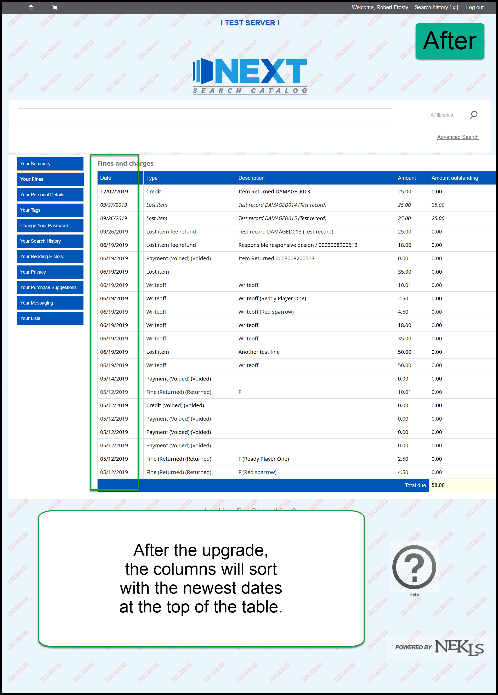

Koha Upgrade - OPAC¶
There are only a few minor changes to the Online Patron Access Catalog (OPAC) in this upgrade.
Password change text¶
There are some minor changes in the text related to password changes in the OPAC have changed.
The text of the “Submit changes” button becomes “Change password” and the text of the “Return to your record” link becomes “Return to my account.”
BEFORE:
AFTER:
BEFORE:
AFTER:
Default sort order of fines¶
Currently when a patron clicks on the “Your fines” tab, the information is displayed in a random order. In Koha 19.05, the information will be sorted by date - with the newest items at the top of the page.
BEFORE:
AFTER:
Video on this topic:¶
Watch a YouTube video about some minor changes to the OPAC that patrons may notice.